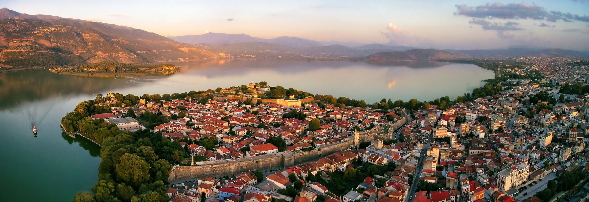
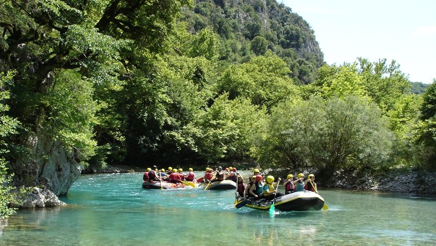
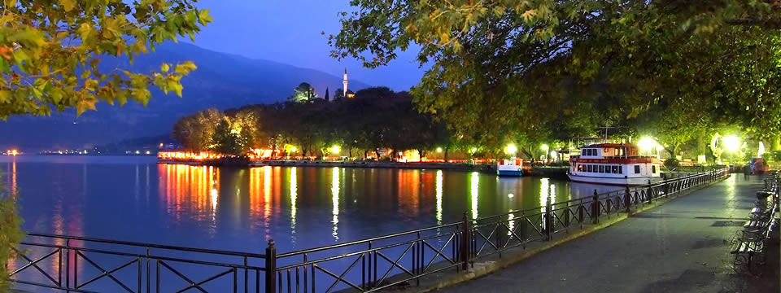
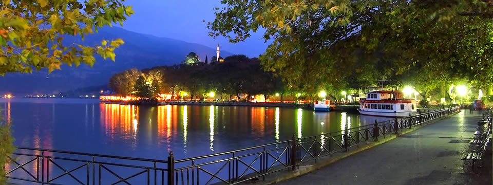

| ΚΕΝΤΡΙΚΗ ΣΕΛΙΔΑ |
Τα Ιωάννινα, γνωστά και ως Γιάννενα ή Γιάννινα, είναι η πρωτεύουσα και μεγαλύτερη πόλη του Νομού Ιωαννίνων και της Ηπείρου, με πληθυσμό 65.574 κατοίκους για την πόλη και 111.740 κατοίκους για το διευρυμένο Δήμο Ιωαννιτών (2011). Τα Ιωάννινα εμπεριέχονται στον ΟΤΑ του Δήμου Ιωαννιτών, ο οποίος συμπεριλαμβάνει και τα γειτονικά χωριά.
Στη σελίδα αυτή θα μάθετε πληροφορίες για:
Οι πρώτες ενδείξεις ανθρώπινης δραστηριότητας στην περιοχή των Ιωαννίνων εντοπίζονται από την Παλαιολιθική Εποχή (πριν 38.000 χρόνια). Αυτό έχει αποδειχθεί από τα λίθινα εργαλεία που βρέθηκαν στο σπήλαιο της Καστρίτσας. Η πόλη ιδρύθηκε τον 6ο αιώνα από το Βυζαντινό Αυτοκράτορα Ιουστινιανό. Η ονομασία της πιθανότατα προέρχεται από τη Μονή του Αγίου Ιωάννη του Προδρόμου που βρισκόταν στο χώρο του κάστρου και ιδρύθηκε πιθανώς περί το 510 μ. Χ. ή επειδή ήταν υπό την προστασία του Αγίου Ιωάννη του Πρόδρομου. Η πόλη αναφέρεται για πρώτη φορά το 527 μ.χ. από τον ιστορικό Προκόπιο με την ονομασία Ευροία.
Τα Ιωάννινα έχουν πλούτο αξιοθέατων και Μουσείων, με την επισήμανση, ότι λόγω της κυκλοφοριακής δυσχέρειας της πόλης και της χωροταξικής πολυδιάσπασης των αξιοθέατων, ο επισκέπτης δυσκολεύεται αρκετά να τα επισκεφθεί όλα. Τα πλέον αξιοσημείωτα αξιοθέατα είναι τα εξής:
| ΓΝΩΣΤΑ ΑΞΙΟΘΕΑΤΑ |
| Αρχαιολογικό Μουσείο Ιωαννίνων |
| Κάστρο Ιωαννίνων |
| Το Βυζαντινό Μουσείο |
| Τέμενος Ασλάν Πασά |
| Οθωμανική Βιβλιοθήκη |
| Στοά Λούλη |
Τα Ιωάννινα έχουν Μεσογειακό κλίμα που μετριάζεται από το υψόμετρο. Το καλοκαίρι είναι θερμό και ξηρό ενώ ο χειμώνας είναι υγρός και ψυχρότερος από τις παραθαλάσσιες περιοχές της Ηπείρου. Τα Ιωάννινα είναι από τις πιο βροχερές πόλεις της Ελλάδος (μέση ετήσια βροχόπτωση: 1081,5mm - πηγή ΕΜΥ) . Η υψηλότερη θερμοκρασία που έχει καταγραφεί είναι 42,4°C και η χαμηλότερη -13°C.
Οι έμπειροι οδηγοί μας θα σας συνοδεύσουν σε μία από τις παρακάτω δραστηριότητες της επιλογής σας:
Rafting
Ιππασία
Canyoning
Πεζοπορία
Αλεξίπωτο πλαγιάς
Τα περίφημα Ζαγοροχώρια, τα ξακουστά Τζουμέρκα και η ευρύτερη περιοχή της Ηπείρου σας περιμένει για να σας μαγέψει με τα ομορφότερα ποτάμια της Ελλάδος, τα παρθένα καταπράσινα δάση, τις τεράστιες χαράδρες, τα επιβλητικά φαράγγια και βουνά και τις ατελείωτες σπάνιες φυσικές ομορφιές! Για την καλύτερη εξυπηρέτηση σας αναλαμβάνουμε τη μεταφορά σας με λεωφορείο της εταιρείας μας. Ο απαιτούμενος εξοπλισμός για τις δραστηριότητες του Ράφτινγκ και του Canyoning παρέχεται από εμάς (στολές neoprene, σωσίβια, αδιάβροχα, κράνη, κουπιά και neoprene παπούτσια) για την διεξαγωγή μιάς ασφαλούς διαδρομής.
 

Για περισσότερες πληροφορίες σχετικά με:
1) Την ιστορία Πατήστε εδώ.
2) Τα αξιοθέατα των Ιωαννίνων Πατήστε εδώ.
3)Τα καταλύμματα των Ιωαννίνων Πατήστε εδώ.